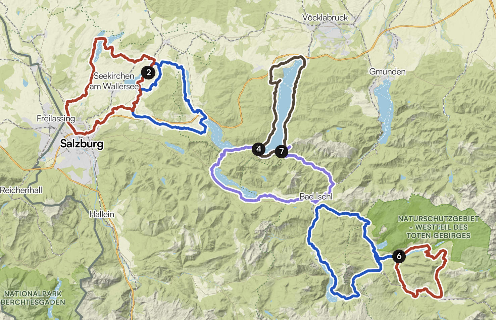
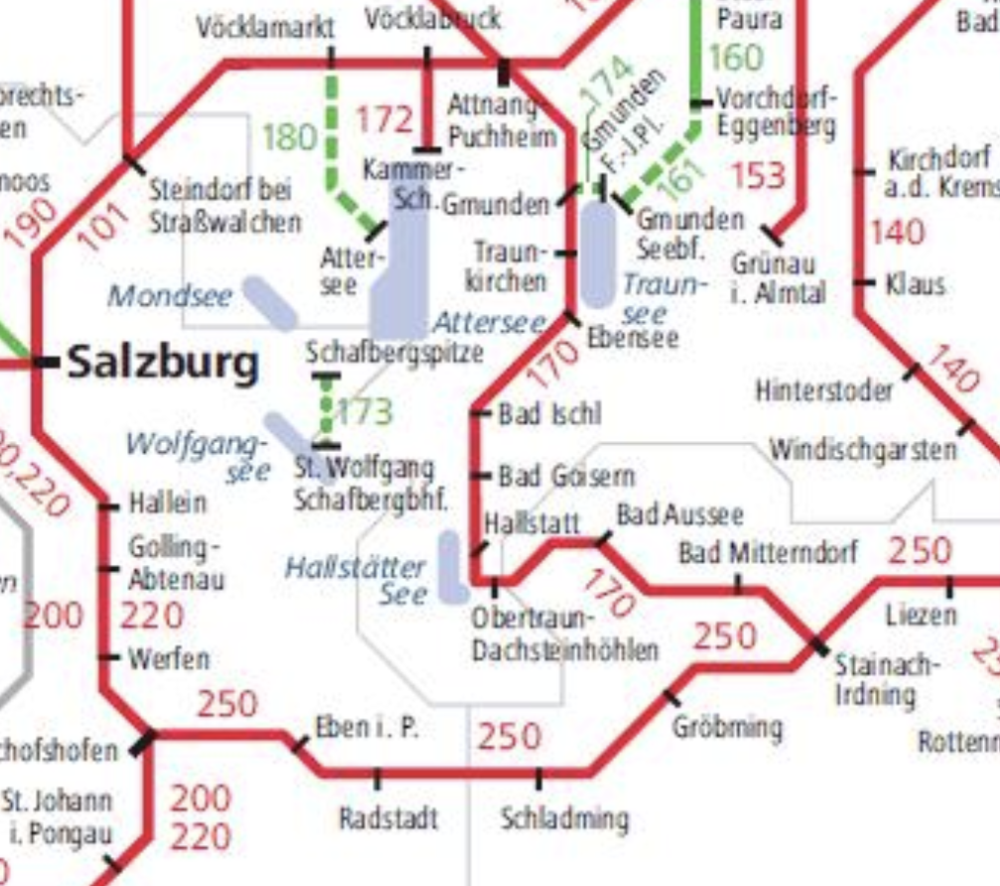

Lien vers la oebb :
https://www.oebb.at/en/(autres choix possibles, à confirmer)
1. du 3/08 au 7/08 : Camping Fenningerspitz https://www.camping-fenningerspitz.at/
2. du 7/08 au 10/08 : Camping Grabner
https://www.camping-grabner.at/en/3. du 10/08 au 14/08 : Camping Altaussee https://www.camping-altaussee.com/en/
Les Toulonnais visitent l'Italie pour se rapprocher
Trajet routier jusqu'à Salzburg (9h30 depuis Auxerre)
on irait directement au camping au Wallersee.
Premier camping : du 3/08 au 7/08Par exemple :
Site https://www.camping-fenningerspitz.at/
Google :https://maps.app.goo.gl/o2Yq6fbmH1ggGMQ2A
Site : https://camping-seekirchen.at/
Google : https://maps.app.goo.gl/hEDtHw4SqRMYdKuz7
Site : https://www.neumarkt.at/Strandbad_Seecamp
Google : https://maps.app.goo.gl/GL55Mviz2bLPTU5f7
Repos / Visite de Salzburg (20 minutes en voiture depuis le camping)
https://www.salzburg.info/frWallersee1
Version courte :
L'ancienne version plus longue :
Wallersee2
Transit jusqu'à Mondsee + Rando à prévoir
Deuxième camping : du 7/08 au 10/08 :Site https://hideaway-attersee.at/
Google https://maps.app.goo.gl/B8vBFSVbR9Z139pY7
Site https://www.camping-grabner.at/en/
Google : https://maps.app.goo.gl/CKRBm4CmjUJ5k4jo9
(nécessite de rallonger légèrement Attersee 1, pas d'effet sur Attersee 2)
Site https://guide.camping-club.de/campings/293
Google : https://maps.app.goo.gl/E1hLoQoXUHyYQL4A7
E-Mail:
info@attersee.at (très curieux de savoir si c'est le bon mail, il y a déjà confusion des sites web entre Attersee et Mondsee sur Google !)
Telefon:
0043 664 3414131
PAS DE SITE WEB
Avis google : pas très clair si OK pour durées réduites ; "Il est important de savoir que ce camping est uniquement destiné aux séjours de longue durée ; il n’est donc pas possible d’y passer une ou deux nuits… Cependant, cette information nous vient de clients qui venaient d’arriver." A l'inverse d'autres y ont passé seulemnt deux nuits, tout en signalant que majoritairement des séjours de longue durée.
Nécessite de changer le trajet komoot
REMARQUE:
Camping sur komoot (prévu initialement) FERMÉ POUR LA SAISON
`
Rando possible (exemple)Attersee1
Attersee2
Transit jusqu'à Badaussee + Rando à prévoir
Troisième Camping du 10/08 au 14/08Plusieurs possibilités, à confirmer. Nécessite de changer un peu le trajet komoot
Réservation possible à partir de 4 nuits (OK pour nous)
Site : https://www.camping-altaussee.com/en/
Google : https://maps.app.goo.gl/7EFfLQvhx7TJrqLU8
Site : https://www.staudnwirt.at/
Google : https://maps.app.goo.gl/PWmQSfd9MUtnBXoY7
Badaussee1 modifié
Badaussee2 modifié
Rando Naturschutzgebiet Westteil des toten Gebirges
Exemple avec trop de dénivelé, à revoir :
Autre balade beaucoup plus facile :
Retour en Alsace (Strasbourg) ; environ 5 h de route. Peut-être possibilité de voir Eva+Charlène
Visite de Strasbourg
Balade dans la vallée des vins en Alsace
Par exemple (à rallonger):
Retour à la maison (5h)